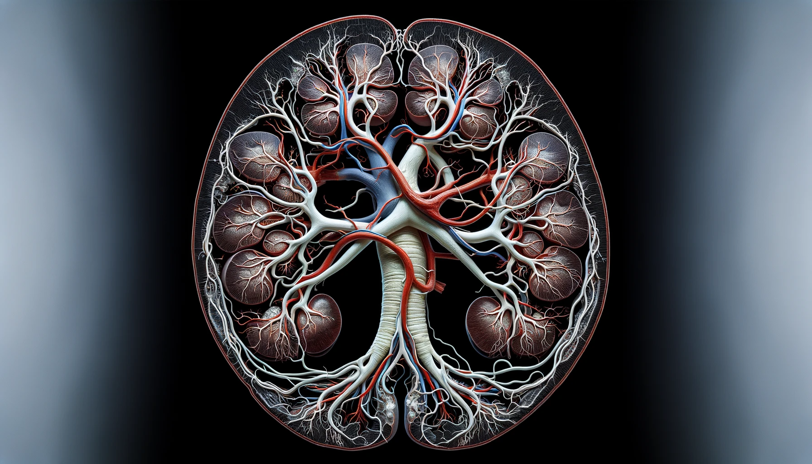

Participated in Kaggle competition to segment blood vessels by developing a model using 3D Hierarchical Phase-Contrast Tomography (HiP-CT) data from human kidneys to automate the vascular segmentation, reducint the manual annotation time from 6+ months to a more efficient timeline.

Developed an AI Poet and Charbot utilizing the ChatGPT API, demonstrating my skills in API integration and AI-driven software development.
Employed and Evaluated U-Net and Attention U-Net for the automated segmentation of retinal blood vessel.

Contributed to a deep learning assisted colorimetric assay project by optimizing model performance through hyperparamters adjustments and provided CSV files of data to non-technical team members for the research purpose.